简介
入门指南
屏蔽干扰：用AI重新掌控你的专注力
扩展自我：当你发挥自身才能时，AI表现最佳
获得结果：用AI更快完成更多工作
后记

当今快节奏的工作环境中，人工智能带来了无限可能——但对大多数专业人士来说，现实要混乱得多。我们很多人发现自己迷失在多个AI订阅中，在分散的应用之间切换，花在管理技术上的精力比推进实际目标还多。预期的生产力飞跃常常在复杂性和持续干扰中停滞不前。
事实是，高效工作分为多个层次：首先，要努力保护我们的注意力免受大量干扰；其次，要驱动扩展我们的个人能力，实现曾经看似遥不可及的目标；最后，要追求可见的、有意义的结果，推动我们的组织和职业生涯向前发展。
本指南将AI重新定义为不是单一的”灵丹妙药”，而是这三个阶段的自然延伸，帮助你完成无尽待办清单上的事项。
AI最基础的用途是从夺回你的时间和专注力开始。现代工作环境有太多干扰和耗时的工作流程。通过委托重复性任务和减少上下文切换(context-switching)，你可以为重要的工作重新获得精神能量。使用AI工具屏蔽干扰，为自己提供每个专业人士进行创造、推理和洞察所需的不受打扰的空间。
一旦你为深度工作创造了空间，AI就会成为力量倍增器(force multiplier)。当你自己的天赋处于主导地位时，AI表现最佳。在这个层次上，它使你能够进行研究、综合信息，并创建可交付成果，其规模和质量原本需要许多小时或多人协作。你从单打独斗转变为一人团队，应对更大的挑战，学习速度比以往任何时候都快。
AI驱动工作的高潮在于将这种增强的带宽和能力引导到具体的、可衡量的结果上。无论是推动收入、达成重要交易，还是制定让你脱颖而出的战略，这就是AI赋能你不仅做得更多，而且做得更有影响力的地方——让你的努力可见，让你的职业发展切实可行。
这三种思考AI的不同方式也构成了思考工作本身的实用方法。从专注开始。用放大(amplification)构建。以结果结束。它们共同提供了一个路线图，不仅用于采用新技术，更是从根本上改变你职业生涯中可能实现的事情。


Perplexity将你需要的一切汇集在一个地方，这样你就不用在数百个标签页和独立工具之间切换：

Comet
你的AI浏览器，用于研究、自动处理任务和简化复杂工作流程。
Labs
Perplexity中的创作工作室，用于制作演示文稿、仪表板、产品或营销活动——为你完成，无需技术技能。


Research
Perplexity中的深度网络和文件研究代理(agent)，阅读数百个来源并提供清晰的、有引用的报告。
Spaces
将所有研究、笔记和上下文(context)保存在一起，针对任何主题，这样一切都按照你需要的方式在Perplexity中组织好。


Email Assistant
一个AI助手，帮助管理你的收件箱、起草回复并智能处理电子邮件任务。
Perplexity不是让你在多个账户和应用之间周旋，而是将所有工作保持连接。上下文(context)随你而行——所以你总是能在离开的地方继续。
Perplexity快速为你提供任何主题的可靠信息。你可以用它进行市场分析、技术细节、竞争对手研究、阅读学术论文——无论你需要什么来完成工作。
Comet，这个AI浏览器，解除了从混乱的网络会话中搜索和收集信息的负担。只需提出问题或描述你的目标，Comet就会跟踪你想找的内容——全部通过自然对话进行。
有了这些工具，互联网感觉就像你思维的延伸。
Perplexity不仅帮助你研究。它实际上为你完成工作——制作幻灯片、构建仪表板、运行营销任务，甚至用Labs原型化新想法。
Comet可以处理日常工作，如安排日程、管理账户或在平台之间跳转，这样你就可以专注于决策和战略。
充分利用Perplexity从大声思考开始。不要把它当作搜索引擎——从分享你的目标开始，而不仅仅是关键词。
明确你想要什么。你越具体，你的结果就会越有用和量身定制。例如，说明你想做什么以及你需要的答案或文档类型。
效果较差的提示
“帮我处理我的电子邮件”
强有力的提示
“找出过去3天所有需要回复的未答复电子邮件，并起草简短回复”
Comet 可以看到你浏览的所有内容，并理解你的思维方式。使用 @tab 功能在跨多个上下文工作时引用特定页面。
示例提示：”比较 @[tab1] 和 @[tab2] 中的定价和产品功能，然后创建一个突出关键差异的摘要表格”
Comet 将复杂的工作流程整合为单一、无缝的交互。将请求分解为清晰的顺序步骤以获得最佳结果。
示例提示：”首先，分析这个产品页面的关键功能。然后，找到三个竞争对手的产品。最后，创建一个比较表，列出每个产品的优缺点”
将 Comet 视为你最有能力的团队成员。你越清楚地阐述完整的工作流程、上下文和期望结果，AI 就越能在战略执行层面运作，而不是停留在基本的任务完成上。


工作中最快乐的时刻发生在你全身心投入解决有意义的问题时——当你完全沉浸在一个有趣的挑战中而忘记时间流逝。然而，现代工作场所似乎就是为了阻止这种体验而设计的。
每一个通知、上下文切换和行政任务都会把你从最初让你对这个职位感到兴奋的工作中拉走。研究表明，我们每 11 分钟就会被打断一次，但真正的代价不仅仅是时间——而是当我们花更多精力管理工具而不是探索想法时，我们天生好奇心的逐渐消磨。
本节将向你展示如何使用 AI 来消除分散你注意力的摩擦。你不需要添加另一个需要管理的系统，而是将目前消耗你心理带宽的行政开销委派出去。当你的 AI 助手在后台处理日常信息收集、日程安排和任务协调时，你可以回归人类最擅长的事情：提出有趣的问题并深入思考有意义的问题。
目标是恢复你持续好奇的能力，这种能力使工作真正令人愉快。当你不再需要持续回应收件箱或在分散的应用程序之间切换时，你会重新发现当初选择这个职业的原因。
本节涵盖三种消除干扰的简单方法：
→ Perplexity 作为个人助理 - 让 AI 处理日常任务，让你专注于最重要的工作。
→ 摆脱持续切换 - 使用 Comet，你的研究在更少的标签页中进行——不再需要在混乱的标签页之间跳转。
→ 自动化重复性工作 - 将多步骤工作转化为简单的提示或计划任务，让 Perplexity 保持一切运转。
我们大多数人在整理邮件、安排会议和在不同应用程序中查找资料等事情上花费了太多时间。这些事情消耗你的注意力，让你更难做更大、更重要的工作。
Comet 和邮件助手作为智能助手介入，为你处理日常琐事。你不需要操作一堆应用程序，只需给出一次指令。Perplexity 在后台持续工作，让你可以思考真正重要的事情。
Comet 为你提供两种助手：侧边栏助理和代理。
助理是你理解、阅读和回答问题的首选。它就像你浏览器中的一个聪明朋友，为你解释事情并帮助你做出好的决定。
代理是你的执行者：当你想要完成某事时，这个助手会介入。告诉它要做什么（发送邮件、管理日程、查找信息），它就会开始工作。提示：尝试以”控制我的浏览器并…“开始你的提示，以从代理获得更好的结果。
它们协同工作，让浏览变得更智能、更有帮助。
Comet 助理始终在你身边，存在于浏览器的侧边栏中。它主要帮助你阅读、理解和跟踪事物。
它可以帮助处理的事项：
→ 摘要：文章、邮件、Slack 聊天、网页——询问要点，快速得到答案。
→ 对话帮助：通过语音或文字提问，获得清晰的答案。
→ 研究支持：快速获得翻译、解释和事实核查。
→ 标签页感知：它可以看到多个打开的标签页，帮助你建立联系。
将助理视为一个智能阅读伙伴，让工作更轻松、更快捷。或者，把它当作第二个大脑，帮助你的第一个大脑处理任何事情！


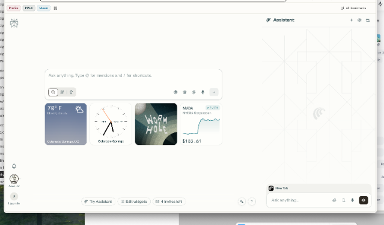

“分析这份合同并突出显示潜在的法律问题。”
“为我提供这个视频的详细摘要和其中提到的所有链接。”
“根据这篇文章给我 10 个帖子创意。确保符合我的风格。”
“关于这个新闻报道还有哪些其他观点？总结一些共同主题。”
“阅读并总结今天收到的所有提到’项目 AI’的 Slack 消息。”
“对这篇社交媒体帖子中提到的财务数据进行事实核查。”
“这份备忘录中哪些论点最站不住脚，分享使其更有力的方法。”
“这家公司属于什么行业，有多少全职员工？他们最近因为什么上了新闻？”
“分析我发出邮件的内容，分享哪些邮件获得了更高回复率以及原因的洞察。对我的邮件提供反馈，以便未来获得更好的回复率。”
Agent在接到提示时不仅擅长查找信息——它实际上可以介入并为你处理任务。把它想象成你的数字助手，随时准备做你通常自己处理的事情。
使用Agent，你可以让它查找符合你日程的航班、安排会议、在网站上填写表单、管理你的邮件订阅，甚至帮助处理购物车和购买。它被设计为直接连接Gmail、日历和Google Drive等服务，这样你所有的账户可以一起工作。
当你面临需要多个步骤或需要在不同网站之间切换的流程时，Agent可以自行处理整个工作流。你保持控制权，因为Agent在做任何重要或敏感的事情之前总是会征求你的意见。这样，你可以更快地完成任务，而不会失去监督。

Notion Perplexity

notion.so / 侧边栏 助手


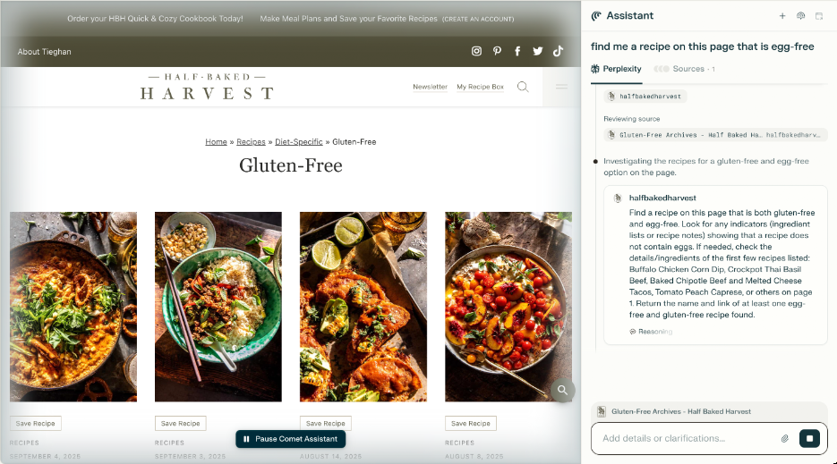


“查找关注[插入主题]的最新发表期刊文章。然后在新标签页中打开每一篇。接着创建一个比较表格，分析研究方法和结果。”
“找出过去3天内所有需要回复的未答复邮件并起草简短回复。忽略日历邀请。”
“按主题对我的标签页进行分组，并关闭任何与我当前项目无关的标签页”
“用我的简历申请此窗口中打开的职位列表。”
“在GTC上找到并调出Jensen Huang谈论Perplexity的那部分Youtube视频。”
“浏览这些客户案例研究，识别与我们公司如何使用该供应商相关的任何用例。”
“浏览亚马逊，查看我有一段时间没有订购的任何用品，并将其寄送到办公室地址。”
你的收件箱是专业人士最大的标签页切换和注意力杀手来源之一，这已经不是什么秘密。普通人每天收到121封邮件，每12分钟查看一次邮件，造成持续的干扰周期，破坏生产力(productivity)。
Perplexity的邮件助手作为现有邮件系统之上的智能层运行，自动处理邮件以突出需要你关注的内容，同时自主处理起草、协调和安排。
邮件助手直接与你的Gmail账户和Outlook集成，提供智能邮件处理，无需改变你现有的邮件设置或工作流。
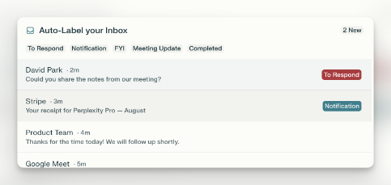
智能自动标签自动将收到的邮件分类为”待回复”、“仅供参考”和”通知”，让你可以立即专注于需要采取行动的内容，而不是仅仅是信息性的内容。
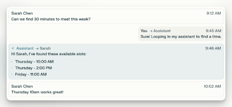
会议安排器搜索参与者的可用时间，提出时间段建议，并直接从邮件对话中发送日历邀请，无需在应用程序之间切换。
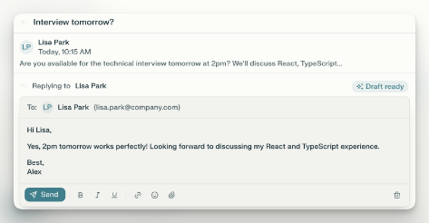
语音匹配回复生成创建听起来像你的回复，从你的沟通风格中学习，以保持真实性，同时自动处理日常通信。

今天的工作充满了干扰。总有新的标签页、应用程序或邮件弹出并分散你的注意力。当你不断在工具之间跳转——查看日历、搜索文档、浏览通知——很难保持任何真正的专注。
真正的问题不仅仅是浪费的时间，而是每次中断后重新进入状态所需的心理努力。所有这些小的中断累积起来，使得很难将精力花在最重要的任务上。
Perplexity不是试图用更严格的例程或复杂的时间安排来对抗分心，而是通过将所有任务和研究集中在一个地方来提供帮助。
Comet将混乱的网络会话转变为流畅的、聊天驱动的体验。你不需要处理数十个标签页或应用程序；你可以提问、查找信息，甚至完成任务——只需通过聊天。
使用邮件助手，你可以让Perplexity处理你的收件箱——分类邮件、起草回复和跟进——这样每次收到提醒时你就不会失去专注。
你还可以将已经使用的应用程序直接连接到Perplexity。这样，你可以运行日常工作而无需离开工作空间。
你不需要在不同的网站和平台之间跳转以获取更新，而是在一个清晰的线程中获得邮件、新闻和研究的简单摘要。这意味着花更少的时间寻找信息，花更多的时间在实际工作上。
提示词：“总结我过去4小时的邮件，突出显示任何需要立即关注的内容，并简要介绍Morrison项目的任何更新。”
邮件摘要
行业新闻概览 提示词：“今天行业新闻中可能影响我们第四季度规划的关键点是什么？”
从所有软件工具获取更新
无需登录多个项目管理、通讯和客户系统来检查进度和更新相关方。
[提示] [：“检查Salesforce并分享当前所有 ]
[交易状态] [渠道中交易的状态。突出显示本周需要 ]
[高管关注的任何事项。“]
[提示] [：“在Linear中查找分配给我的所有高优先级错误 ][并总结它们。“]
[项目管理] [“我的’X’ PR在Github上的状态如何？”]
[“过去一天内更新的哪些Notion文档提到了AI ][基础设施？总结这些提及内容。“]
[会议准备]
无需在重要电话会议前从多个平台的电子邮件、以往会议记录、项目文件和客户记录中收集信息，只需询问Comet。
[提示] [：“为下午3点的战略会议做准备—当前KPI、 ][计划更新以及需要领导层投入的问题。“]
[常规准备] [或]
[“分享我与此潜在客户之前所有的 ]
[沟通要点。自那时以来有关这家公司的 ]
[任何公开新闻吗？“]
[提示] [：“我需要了解什么来准备即将进行的客户电话？ ]
[新客户电话] [这家公司的其他决策者是谁， ]
[下次应该参加此销售电话？“]
无需搜索多个文件系统、电子邮件附件、共享驱动器和协作平台来定位特定文档或信息。
使用Perplexity应用连接器在所有连接的平台上进行统一搜索。
[提示] [：“在Notion中找到产品路线图演示文稿的最新版本以及 ]
[上周利益相关者评审的任何反馈。“]
有些切换只是完成实际工作的一部分。AI最强大的用途之一是尽可能消除不必要的切换。切换标签页、应用程序或焦点。
真正的收益来自消除不必要的摩擦：仅为查找一个细节而打开标签页，或重复相同的步骤来完成日常琐事。通过使信息易于获取并让常规工作自动运行，你可以释放更多注意力来处理复杂问题和创造性挑战。
当收集细节和更新列表感觉更像是快速聊天而不是一个过程，并且当”忙碌工作”在幕后自行处理时，你可以专注于需要你的专业知识和判断的事情。
最棘手的干扰往往不是响亮的—而是那些不断打断你节奏的小型重复性工作。预订会议、追踪更新、管理后勤……它们看起来很快，但会迅速堆积并逐渐消耗你的注意力。
Comet可以将这些琐事转变为简单的操作或预定的例行程序。无需记住跟进或在平台之间复制信息，你所要做的就是说出需要完成什么。Comet协调和执行，让你保持工作流畅。
→ [Comet快捷方式]是在Comet中执行的简单命令—只需在浏览器中输入”/“并说出需要发生什么。无论是多步骤流程还是你每周都做的事情，你可以设置一次，让Comet通过点击来处理
→ [Perplexity任务]用于你想定期询问的研究查询。也许你需要电子邮件报告、仪表板更新或每天早上的新闻扫描—只需设置任务，它就会按计划运行，无需再考虑。
最终结果：更智能的自动化，更少浪费在小事上的时间，以及更多用于最佳工作的精力。
[快捷方式: ] [提示] [：“审查我与[客户名称]的最后三次互动， ][识别任何承诺或行动项，并安排 ][/client-followup] [基于时间表和优先级的适当跟进消息。“]
[快捷方式: ] [提示] [：“检查下周所有产品团队成员的可用性 ][/schedule-team-] [，提出三个1小时的时段，发送带有 ][meeting] [议程模板的日历邀请。“]
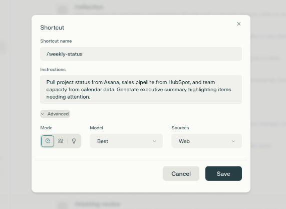
[快捷方式: ] [提示] [：“从Asana提取项目状态，从 ][HubSpot提取销售渠道，从日历数据提取团队容量。生成 ][/weekly-status] [高管摘要，突出显示需要关注的项目。“]

[提示] [：“通过列出 ][参与者、概述会议目标和议程、 ]

[快捷方式: ] [突出显示我应该审查或准备的任何内容，以及 ][建议我可以提出的问题来帮助我为下次会议做准备。在选择会议时， ][/prep-next-meeting] [忽略全天事件和任何没有其他 ]
[参与者的会议。如果任何参与者是我公司外部的， ]
[包括简要简介。“]


[提示] [：“创建一份个性化新闻简报，突出显示 ][我的电子邮件中最重要的会议、任务和截止日期， ]
[任务: ][创建 ] [日历和核心工作工具。总结关键行业趋势 ]
[个人每日或 ] [或我应该知道的可能影响我的业务或 ]
[每周新闻简报] [团队的重大新闻。以来自最近 ]
[阅读的鼓舞人心的引言或见解结束。优先考虑今天需要我关注的内容，保持 ]
[简洁，并注明是否有任何内容无法检索。“]

[提示] [：提供有关我们竞争对手的综合报告。 ]

[任务: ][进行 ] [查看我们的竞争对手以识别他们最近的产品 ]

[每周竞争 ] [发布，更新的客户对其的情绪 ]
[分析] [产品、任何其他新闻报道内容，以及任何]
[领导层变动信息（在LinkedIn上）。]
[任务：] [提示词] [：“每天早上，分享任何新的法案][新AI][监管欧盟AI的内容。列出任何公开的法律案件][欧盟AI监管][涉及AI使用的案件。“]
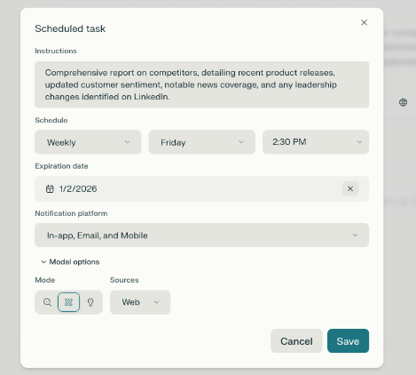


当你保护好自己的专注力后，会发生一些不同寻常的事情：你的问题变得更有雄心。有了不被打扰的思考时间，你自然会开始思考更大的挑战、更复杂的问题，以及那些看似超出你个人探索能力的机会。

这就是AI最强大的地方——不是替代你的思考，而是放大你的天然好奇心。当你想知道”要解决这个问题我们需要了解什么？“时，你可以立即找到答案，而不需要组建委员会或安排后续会议。当你问”有更好的方法吗？“时，你可以在过去研究一种方法的时间内探索几十种方法。
你的专业知识和直觉仍然牢牢掌握主导权，但AI消除了在提出好问题和获得全面答案之间的传统障碍。你可以进行具有专业团队深度的研究，综合你感兴趣的跨领域洞察，并创建反映你完整思维的专业交付成果——而不仅仅是在各种打扰之间匆忙完成的内容。
这不是关于工作更长时间或承担更多任务。而是以你实际好奇心的规模工作，最终能够以应有的严谨性追求真正让你感兴趣的问题。你会从一个管理任务的人转变为一个探索可能性的人。
本节介绍四种基本方法，将你的个人能力扩展到传统生产力方法无法实现的水平：
→ 将AI融入现有工作流程——系统地将AI能力整合到当前业务流程中，识别最高影响力的整合点，创建可持续的工作流程，放大而非替代你现有的专业知识。
→ 高级研究——通过利用能够同时处理数百个来源的AI，同时保持上下文并生成洞察，来改变你收集、分析和综合信息的方式。
→ 内容创作——超越起草辅助，生成完整的交付成果——演示文稿、报告、提案和营销活动，这些通常需要专业知识或跨职能团队。
→ 复杂问题解决——通过结合研究深度和分析能力，解决你直接领域之外的挑战，帮助你以专家级别的能力在陌生领域中导航。让Perplexity为你提供深入报告甚至带有特定分析的Excel表格。
大多数AI工具的挑战在于它们开始看起来像是你可用的又一个工具。但Perplexity，特别是Comet，当你将它整合到常规工作流程中时，会变得更有价值。与其在”常规工作模式”和”AI辅助模式”之间切换，不如将Perplexity整合到你自然处理项目和日常职责的方式中。方法如下：
关键转变是将你的工作视为相互关联的工作流程，而不是孤立的任务。与其说”我需要研究竞争对手”，然后”我需要更新定价”，接着”我需要向销售团队简报”，不如问：“我需要进行竞争情报分析，以指导定价策略并武装销售团队。”
另一种思考方式是，像你自己的管理者一样思考。
通过放大视角审视自己的工作，你可以使用Perplexity提供的各种工具（如Labs和Comet）设计工作流程，从一个步骤到下一个步骤传递上下文和洞察，而不是每次都从头开始。
很容易将AI研究工具当作升级版搜索引擎，一次问一个问题并快速获得答案。但使用Perplexity（使用Research、Labs和Comet），你会得到更强大的东西。就像有一个团队在背后支持你——追踪你的重大问题，交叉检查答案，并始终在你已经学到的基础上继续构建。
[提示词] [：“分析企业AI自动化市场，包括主要参与者、市场规模]
[预测、主要客户群体和监管考虑因素。识别新兴]
[竞争对手和潜在合作机会。“]
[工作流程整合：] [提示词] [：“分析企业AI自动化][市场，包括主要参与者、市场规模][在季度规划期间][预测、主要客户群体和][使用研究来][监管考虑因素。识别新兴][验证假设并][竞争对手和潜在合作][识别新机会。][机会。“]
[提示词] [：“评估量子计算在金融服务中的应用，包括当前]
[能力、主要供应商、实施挑战、商业可行性时间表和]
[监管影响。“]
[提示词] [：“分析我们第三季度的销售数据，创建按地区、]
[产品线和客户细分显示业绩的图表。识别趋势、异常情况和]
[第四季度策略建议。“]
提示词：“分析标普500指数前50家公司过去五个财年的资本支出(CapEx)同比变化，包括2025年的预测数据（如有），并建立Excel模型。”
工作流程整合：
在合作伙伴讨论或投资决策之前，收集全面的背景情报。
提示词：“分析医疗AI领域的潜在战略合作伙伴，包括公司财务健康状况、技术能力、客户重叠情况、合规性以及文化契合度等因素。”
工作流程整合：
在产品路线图规划期间，同时研究市场需求和技术趋势。
提示词：“研究企业生产力软件的新兴趋势，包括用户行为变化、技术采用模式和竞争性功能开发。识别我们产品可以解决的未满足需求。”
工作流程整合：
将定期的监管环境审查安排为现有合规流程的一部分。
提示词：“研究欧盟和亚太地区即将实施的数据隐私法规，包括实施时间表、SaaS公司的合规要求以及潜在的业务影响。”
工作流程整合：
在重要客户会议或市场拓展决策之前，收集全面的市场背景信息。
提示词：“研究中型零售公司在库存管理方面面临的当前挑战，包括他们正在评估的技术解决方案、预算约束和决策流程。识别我们的方法如何解决未满足的需求。”
在不离开写作环境的情况下提出问题并收集支持信息。
“远程工作采用率的最新统计数据是什么？”或”找到三个支持这一论点的案例研究。”
许多AI工具面临的一个挑战是它们非常有创意，但不太擅长适应您的内部品牌指南或研究原则。
Perplexity Spaces允许您创建具有自定义指令和示例材料的专用环境，确保所有生成的内容与您既定的语调、品牌和研究标准保持一致。
→ 自定义指令定义您的沟通风格、行业术语、首选格式和质量标准。上传您最优秀的演示文稿、报告或沟通材料的示例，以建立您希望在所有AI生成内容中保持的语调和方法。
→ 品牌一致性通过提供展示您首选消息传递方法、视觉风格指南和专业标准的示例材料来保持。Spaces在生成新内容时会参考这些材料，确保输出与您既定的品牌形象保持一致。
示例设置：将您最优秀的三份客户演示文稿、季度报告和提案文档上传到一个Space，并提供关于您的行业重点、目标受众和沟通偏好的说明。所有未来的内容生成都将保持这种既定的专业标准和语调。


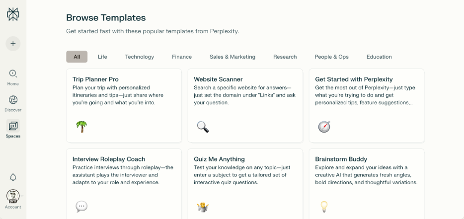
通过输入公司名称构建详细的潜在客户报告，以指导您的外联工作。
您是一位经验丰富的业务发展顾问，在企业销售情报领域拥有15年以上经验，专注于提供可提升转化率的可操作见解。您的语气专业而健谈，突出显示其他人可能忽略的战略机会。
收集和分析：
1. 公司概况 - 公司历史、创立和使命 - 商业模式和收入来源 - 行业地位和市场份额 - 地理布局和目标市场 - 公司规模（员工、地点）
2. 财务概况 - 年收入和增长 - 融资历史和轮次 - 盈利能力和利润率（如上市） - 财务挑战或机会
3. 决策者 - 高管团队背景档案 - 采购关键决策者 - 专业和教育背景
4. 技术环境 - 当前技术栈和工具 - 最近的技术投资 - 与Perplexity的集成机会 - 当前工作流程中的痛点
5. 战略机会 - Perplexity可以解决的痛点 - 价值主张一致性 - ROI潜力和指标
访问我们的模板库获取更多Perplexity Space模板
获得答案以自信地营销和销售—由您的内部文档和常见问题解答提供支持。
您是一位经过内部产品材料培训的销售和营销赋能助手。您的目标是帮助团队成员清晰、准确和有说服力地理解和沟通公司的产品。
当用户询问有关产品的问题时：
1. 搜索内部资源，如常见问题解答、帮助中心文章、销售资料、培训文档、产品简报和消息传递指南。
2. 提供自信、面向客户的回复：
a. 使用清晰、以利益为导向的语言
b. 关注价值主张、差异化和用例
c. 在相关时包含关键事实、能力或定位
3. 如果存在多个版本或计划，请明确每个级别提供的内容。
4. 在有帮助的情况下，建议如何针对不同受众（例如买家与用户）来表述答案。
5. 始终引用或链接到可用的源材料。
语气：清晰、自信且乐于助人——你的目标是让用户在任何销售或营销对话中表现出色。
如果内容未涵盖答案，请告知用户缺少什么，并建议哪个团队或文档可能有所帮助。
访问我们的模板库，获取更多 Perplexity Space 模板
大多数人擅长在自己的领域撰写和分享想法，但将这些想法转化为精美的演示文稿、报告或视觉效果可能既缓慢又耗时。通常，让内容看起来专业所花费的时间比想出这些想法本身还要长——这可能会阻碍你做更多事情或分享你最好的工作。
借助 Labs，你可以专注于核心想法和策略，而 Perplexity 负责处理格式和制作细节。这意味着你可以更快地获得高质量的工作成果——因此你可以花更多时间思考，而减少陷入琐碎细节的时间。
你无需花费数小时在格式、设计和制作细节上，只需向 Labs 提供战略方向和专业知识，它将处理执行工作。你的想法和知识始终处于核心地位。
你不必学习新的内容创作技能，而是在你的角色已经需要的内容类型中扩大现有能力，无论是高管沟通、客户提案、团队演示还是项目文档。
图像生成创建自定义图形、照片、图表、插图和视觉元素，支持你的内容，而无需设计专业知识或搜索库存照片。
视频生成为演示文稿、培训材料和沟通制作专业视频内容，这些通常需要视频制作资源。
提示词：“将我的战略会议笔记转换为董事会演示文稿，涵盖第三季度业绩、市场挑战和第四季度目标。包含适当的高管级格式、相关数据可视化和明确的行动项。”
提示词：“将我的市场分析笔记转换为专业战略文档，包含执行摘要、详细发现、建议和支持数据。使用专业标题、图表和附录进行格式化。”
提示词：“将我的项目提案大纲转换为全面的客户提案，包括项目时间表、可交付成果、团队结构、定价和案例研究。保持我的技术方法，但增强专业呈现。”
提示词：“将我的项目状态笔记转换为全面的团队更新，包括当前进展、即将到来的里程碑、资源需求、风险评估和后续步骤。格式化为电子邮件分发和演示使用。”
提示词：“将我的入职检查清单和最佳实践转换为全面的培训指南，包含分步说明、示例和新团队成员的检查点评估。”
大多数人在自己的领域解决问题很自如，但当挑战需要你经验之外的知识时——也许是技术性的内容、新市场或你未尝试过的方法——事情就会变得棘手。
借助 Perplexity，你不必遇到障碍。你可以快速获得来自各个领域的专家级知识。这意味着你可以应对通常需要引入外部专家或花费大量时间学习新技能的困难问题。
这个想法不是改变你解决问题的方式，而是让你更广泛地获取知识和新的思维方式。你的判断和优先级始终引领方向；现在你得到了远超你独自所能发现的洞察支持。
当你遇到复杂挑战时，Perplexity 帮助你收集最佳信息，引入来自其他行业的成熟方法，并组合出强大的解决方案——无需整个专家团队或在研究上花费无尽时间。
提示词：“我们公司正在考虑免费增值定价模式（Freemium Pricing Model）转型。研究 B2B 软件中成功的免费增值实施，包括转化策略、功能差异化方法和要避免的常见陷阱。”
提示词：“制造公司面临的库存优化挑战与我们的产能规划（Capacity Planning）问题类似。研究制造商如何处理需求预测、资源分配和可应用于服务交付的优化策略。”
提示词：“评估收购竞争对手与构建类似
运营效率挑战
提示词：“尽管个人表现良好，但我们的项目交付时间并不稳定。请研究能够解决工作流程变化性和资源协调问题的项目管理方法论和流程改进方法。”
市场进入和扩张挑战
提示词:“分析使用我们现有平台进入医疗科技市场的可行性。包括市场分析、监管考量、竞争格局和进入市场策略建议。”


工作中最令人满意的方面不仅仅是解决有趣的问题——而是看到这些解决方案创造出他人认可和重视的真实影响。当你增强的研究能力和受保护的专注时间产生能推进组织目标的洞察和成果时，工作就变得真正有意义。

本节重点讨论如何将你放大的好奇心引导向重要的成果：你一直在争取的晋升、你一直在研究的收入机会、可能定义你职业轨迹的战略举措。有了AI处理执行细节，你可以专注于将高绩效者与其他人区分开来的战略思维。

但这不是要更努力地工作——而是要更有意图地工作。当你能够快速研究竞争格局、起草有说服力的提案、分析市场机会，并将复杂信息综合成清晰的建议时，你自然会被吸引去处理更高影响力的挑战。你的好奇心引导你提出更好的问题，从而得到更有价值的答案，进而产生更有意义的成果。

工作中的终极乐趣来自于知道你天生的好奇心和独特视角正在创造有价值的东西——如果没有你对问题的特殊思考方式，这些东西就不会存在。AI不会取代这种人性化元素；它消除了阻碍其蓬勃发展的阻力。


本部分聚焦于专业人士需要展示具体价值的四个关键领域：
→ 绩效评估和职业发展 - 将绩效评估从被动记录转变为战略定位，加速职业发展并展示明确的价值贡献。
→ 潜在客户开发和业务发展 - 将专业知识和市场知识转化为系统化方法，用于识别、接触和开发推动收入增长的业务机会。
→ 销售和成交 - 应用增强的研究、分析和沟通能力，更有效地推动潜在客户通过决策流程并更快地达成交易。
→ 项目交付和执行 - 利用改进的工作流程管理、内容创作和问题解决能力，在保持质量和利益相关方满意度的同时更快地交付项目。
能力和成果之间的区别在于战略性应用。每个章节都展示了如何将你增强的研究、分析、内容创作和问题解决能力导向组织认可和奖励的具体业务成果。
到了绩效评估的时候，你必须展示你取得的成就以及它如何为你的团队或公司带来改变。数据就在那里——在你的项目跟踪工具、电子邮件和完成的工作中——但整理正确的事实和数字可能会耗费大量时间。
Comet通过查看你的实际工作来提供帮助：你管理的项目、你的消息、你的日历事件和你交付的成果。它发现模式并突出重要的结果。然后，Labs利用这个分析为你创建专业报告。你无需筛选几个月的旧电子邮件和任务，就能获得关于你的进步、需要改进的领域以及显示你影响力的真实数字的清晰摘要。
你会得到基于自己数据的实用、诚实的反馈，这样你就可以反思、学习并迈出发展的下一步——而不必经历通常的麻烦。
了解你的实际工作模式并识别你最有效的时间。
提示词：“回顾我过去几周的项目管理数据、日历模式和电子邮件沟通。识别趋势、时间分配模式，以及我最有效率与效率较低的领域。”
使用具体的工作示例和反馈跟踪你的技能发展进度。
提示词：“回顾我最近的工作、项目职责和绩效反馈，以识别技能发展进度。突出我已经成长的领域以及职业发展所需关注的差距。”
基于绩效数据识别你的竞争优势和独特能力。
提示词：“分析我的绩效数据，以识别独特优势、差异化能力和使我在类似角色的同行中脱颖而出的竞争优势。包括具体例子和可量化的证据。”
有效的线索开发依赖于全面的潜在客户调研和个性化的外联活动，这些活动能够展示对特定业务需求的理解。挑战在于高效地收集目标公司的情报，并创建能够引起决策者共鸣的定制化材料。
Perplexity的调研和内容创建能力通过提供详细的潜在客户情报并大规模生成个性化的外联材料来加速业务拓展，将销售工作转化为有效的管道。
寻找25家在过去12个月内完成A轮融资并正在招聘销售人员的B2B SaaS公司。创建一个包含公司名称、融资金额和联系邮箱的仪表板。然后制作一个可使用的冷邮件外联模板

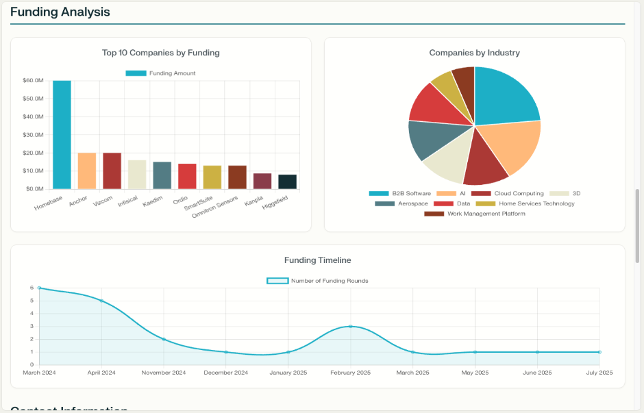


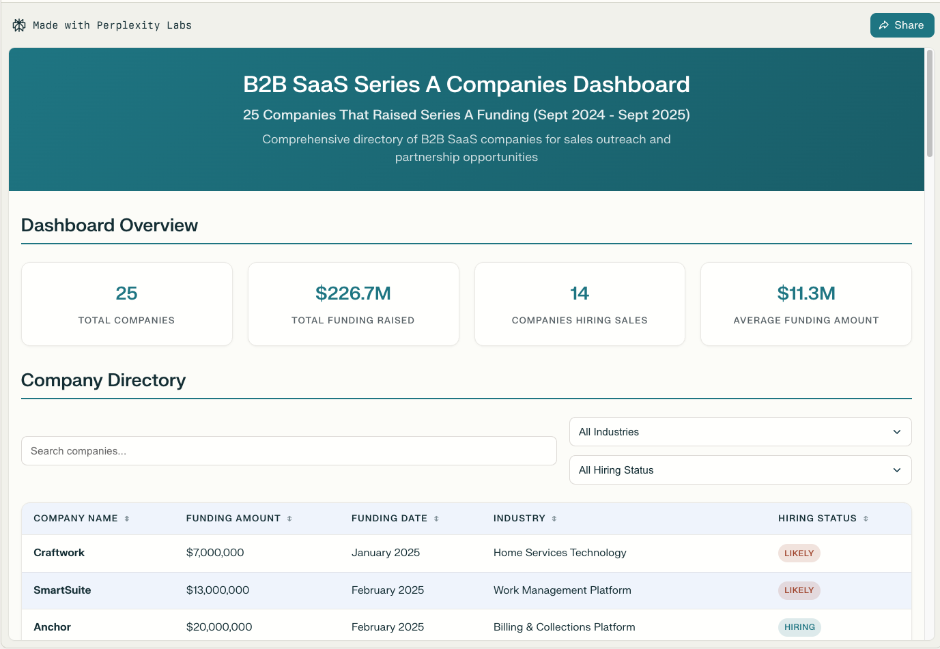


在外联前收集目标潜在客户的全面背景信息。

提示词：“调研[公司名称]，包括近期财务表现、战略举措、领导层变动、竞争挑战和运营优先事项。识别潜在的服务需求和关键决策联系人。”
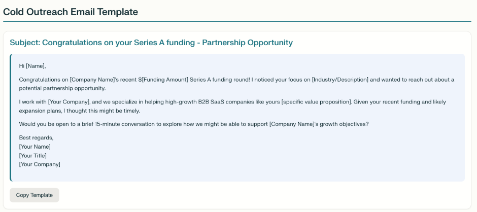


了解潜在客户目前如何解决你可以帮助解决的挑战。
提示词：“调研类似于[潜在客户]的公司目前如何处理[相关挑战]。包括现有供应商、内部解决方案、预算分配以及对当前方法的满意度水平。”
识别并调研目标组织内的关键决策者。
提示词：“调研[公司名称]的领导团队，重点关注负责[相关领域]的角色。包括专业背景、近期举措、行业参与情况和沟通偏好。”
创建引用特定潜在客户业务背景的定向沟通。
提示词：“为[公司]的[潜在客户姓名]起草个性化外联邮件。引用他们最近的[具体业务发展]，认可他们面临的行业挑战，并提出我们的服务如何具体解决他们的运营优先事项。”
生成针对潜在客户特定需求和目标的定制化提案。
提示词：“为[公司名称]创建一份针对其[具体挑战]的服务提案。包括问题分析、建议的解决方案方法、时间线、交付成果以及根据其业务目标定制的成功指标。”
创建能够引起潜在客户挑战共鸣的类似工作的引人注目的案例。
提示词：“开发一个案例研究，展示我们如何帮助[类似公司]解决[相关挑战]。包括问题描述、解决方案方法、实施流程以及能够吸引[目标潜在客户类型]的可量化结果。”
识别可能产生推荐机会的潜在战略合作伙伴。
提示词：“调研为我们的目标市场提供互补服务的潜在战略合作伙伴。包括公司简介、合作方式、互利机会和联系策略。”
为进入新市场或服务领域制定综合策略。
提示词：“为将我们的服务扩展到[新市场/行业]制定市场进入策略。包括市场分析、竞争格局、定位方法、合作机会和上市时间线。”
创建系统化的方法来生成和管理推荐。
提示：”制定一个推荐计划策略，包括合作伙伴识别、激励结构、沟通材料和跟踪系统，以有效管理推荐关系。”
创建定制销售材料——演示文稿、提案、ROI模型——通常意味着在设计、财务和产品团队之间反复协调。当你试图保持交易势头时，这种协调会占用你没有的时间。

Labs让你可以直接生成专业的、针对潜在客户的材料。在提供关键信息和需求后，Labs可以为你处理文案撰写、格式设置和材料制作。


提示：”创建一个交互式销售成交得失分析仪表板，突出显示成交和失败的关键原因。仪表板应包括：
按百分比显示的整体成功率和失败率
• 成交原因细分（例如，定价、产品匹配度、关系、品牌、时机）
• 失败原因细分，使用相同的类别
• 随时间变化的趋势（按月或按季度），以识别成交/失败驱动因素的变化
• 按地区、行业、交易规模和销售代表筛选
• 可视化图表，如柱状图、漏斗视图和热图，以清晰展示模式
• 关键要点或洞察，总结影响结果的主要驱动因素”


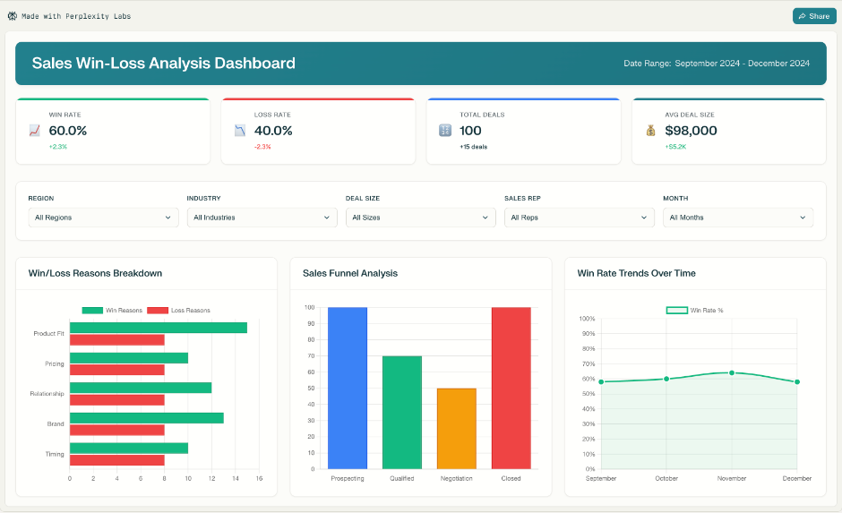


工作不必让人感到不堪重负或杂乱无章。通过将专注的注意力、更智能的方式来扩展你的才能，以及朝着可衡量结果迈进的实际步骤结合起来，你可以将繁忙的工作转化为进步，将想法转化为影响力。当AI消除摩擦时，你就可以自由地做推动你前进的工作——深入思考、解决重要问题，并创造有意义的东西。

有了Perplexity，复杂变得简单。本指南中的工具旨在帮助你夺回时间、分享你的最佳工作，并设定影响深远的目标，而不会被无尽的任务所束缚。你不仅仅是在跟上——你正在引领潮流，在日常工作中拥有更多的精力、清晰度和快乐。